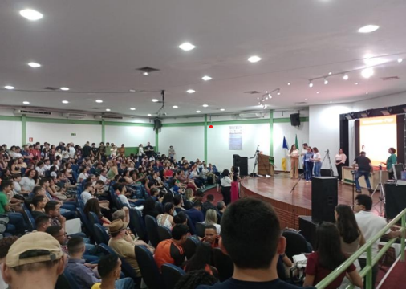
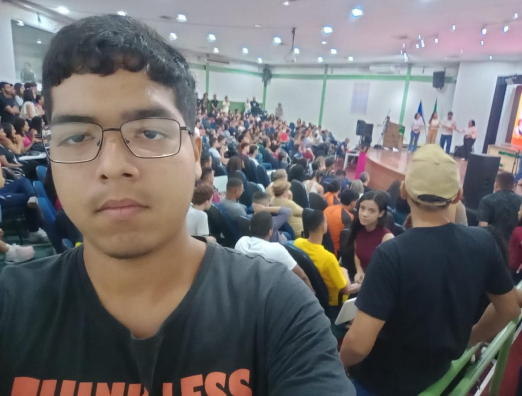

Aluno:Nicolas Araujo Muniz
Horário: 09:30 - 10:30
Dia: 18 de fevereiro de 2024
Local: Auditório Central
O IDEATHON e uma proposta de atividade voltada para o empreendedorismo e inovação tecnológicadando soluções criativas para problemas da vida real.As cinco ideias apresentadas na final eram relacionadas ao descarteou reaproveitamento do vape(ou cigarro eletrônico) apreendidos pela receita federal.Desta forma, os alunos deveriam construir um pitch,e apresentar sua ideia inovadora para os juízes, e no final iriam decidir qual foi a melhor ideia.
As cinco ideias de forma geral era sobre reaproveitartodas as partesdo vapeetransforma-lasem algo útilno dia a dia das pessoas ou em situaçõesespecificas. Essa atividade foi bem interessante,pois atiçou os jovensa usar suacriatividadede forma útil para benefíciodasocie dade.A 15ª Jornada de Iniciação Científica e Extensão (JICE)foiinteressante, ver muitas ideias diferentes e criativasde váriosramos científicosdiferentes ajuda noaprendizado dos estudantese aperfeiçoamentodos professoresao ministrar as aulas.
Para mais informações: Clique aqui